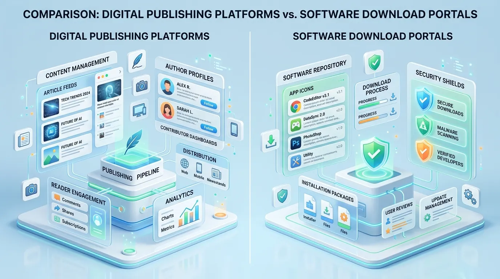
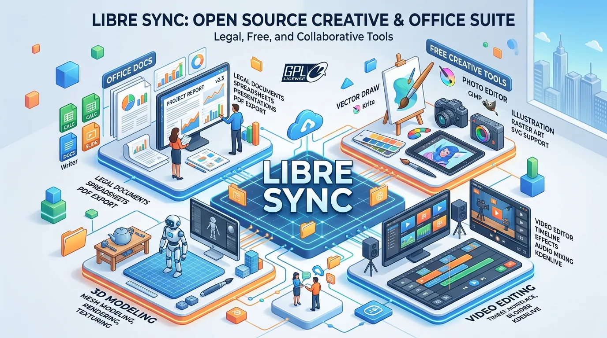

Crackstube Explained: Everything You Need to Know About the Name, Websites, Safety & Alternatives
If you have searched for Crackstube recently, you may have noticed something strange: the results do not all seem to describe the same thing.

If you have searched for Crackstube recently, you may have noticed something strange: the results do not all seem to describe the same thing.
One page may present Crackstube as a digital publishing platform. Another may discuss cracked software or unauthorized streaming. A different result may describe an educational website using the Crackstube name. That makes a straightforward question—"What is Crackstube?"—surprisingly difficult to answer.
And that confusion isn't necessarily the user's fault.
Crackstube is currently an ambiguous search term used in connection with different websites and different types of online content. Current search results include a crackstube.com property described as a digital media platform with guest-posting opportunities, while other domains and articles associate the term with software cracking, streaming, adult content, or general internet education.
That distinction is important because saying simply that "Crackstube is safe" or "Crackstube is dangerous" can be misleading without identifying the exact website.
This guide takes a broader look at Crackstube, what the name can refer to, why the search results are confusing, how to distinguish different versions of the term, what risks are associated with unofficial cracked-content websites, and what safer alternatives are available.
What Is Crackstube?
Crackstube is not currently a term with one universally consistent meaning online.
In search results, it appears in several different contexts.
One of the clearest current examples is Crackstube.com, which is indexed as a digital media platform publishing articles across subjects including Technology, Finance, Education, Business and other areas. The site's indexed description also mentions guest-posting opportunities.
At the same time, other websites use "Crackstube" in connection with cracked software, unauthorized streaming and other forms of unofficial digital content.
There is even a separate CrackstubeHQ website that describes itself as an educational resource explaining internet, technology and digital topics in simple language.
So the first rule when researching Crackstube is simple: Don't assume that every website using the Crackstube name is the same entity. Check the domain first. That one step can completely change the answer to questions about safety, purpose, content and legitimacy.
Why Is Crackstube So Confusing?
The name itself contributes to the confusion.
The word "crack" has a long association with software licensing. In computing, a software crack generally refers to a modification intended to bypass activation, licensing or copy-protection mechanisms.
The word "tube", meanwhile, is commonly associated with video and media websites.
Put the two together and it naturally sounds like a website offering free software, free videos or some combination of the two.
But a name doesn't establish a website's actual business model. A domain using the word "Crackstube" can be used for publishing, education, entertainment or something else entirely. That's exactly what the current search landscape demonstrates.
The Different Crackstube Search Intents
When someone types Crackstube into Google, they may actually be looking for very different things:
- Crackstube.com: This intent is associated with a digital publishing/media website. Current technical indexing describes the domain as a digital media platform with guest-posting opportunities.
- Crackstube and Cracked Software: Some searches use the term in connection with software that has had licensing or activation restrictions bypassed.
- Crackstube Streaming: Other pages associate the term with unofficial video or streaming websites.
- Crackstube Educational Content: A separate site, CrackstubeHQ, currently positions the name around educational content explaining internet, technology and digital subjects rather than downloads or streaming.
- Crackstube Guest Posting: Because Crackstube.com is indexed with a guest-posting identity, writers, marketers and businesses may search the name specifically because they are looking for publishing opportunities.
This is why a good article about Crackstube needs to cover entity disambiguation instead of assuming one search intent.

Crackstube.com: The Digital Publishing Side
One of the most important entities associated with the keyword is Crackstube.com.
Current web indexing describes it as: "Crackstube - Leading Digital Media Platform with Guest Posting Opportunities." Its indexed description says the website publishes expert articles across Technology, Finance, Education, Business and other subjects and welcomes quality guest posts.
That positioning makes it fundamentally different from a website whose primary purpose is distributing cracked software.
What does that mean for readers? A publishing-oriented website is primarily concerned with articles, guides, informational content, topic categories, contributors, guest posts, and digital publishing. The user experience is therefore centered around reading rather than downloading modified software.
What does it mean for writers? The guest-posting component makes Crackstube.com potentially relevant to freelance writers, bloggers, SEO professionals, digital marketers, businesses, consultants, and subject-matter experts. However, publishing opportunities should always be evaluated based on current editorial rules, audience relevance and actual site quality rather than assuming that every guest post automatically provides SEO value.
Crackstube as an Educational Website
Another current entity using the name is CrackstubeHQ.
Its website describes Crackstube as an educational platform designed to explain internet, technology and digital topics in straightforward language. The site emphasizes concepts such as internet explanations, digital literacy, search behavior, technology, online platforms, and digital trends.
This is another reason the keyword shouldn't automatically be classified as a piracy term. If a reader arrives at an educational Crackstube website, the purpose is completely different from visiting an unofficial software-download site.
Is Crackstube a Streaming Website?
There is no single answer without identifying the domain. Some websites and articles currently use the Crackstube name in connection with streaming or adult video content. That inconsistency is precisely why domain-level verification matters.
You should not assume that a page describing one version of Crackstube accurately describes another website using the same keyword.
Is Crackstube Related to Cracked Software?
Again, the keyword is associated with cracked software in some search contexts, but that does not establish that every Crackstube website distributes cracked software.
A software crack generally attempts to bypass a program's normal licensing or activation mechanism. People search for cracked software because commercial applications can be expensive, subscription fees can add up, and some features may be locked behind paid plans.
But the apparent financial saving comes with significant downsides.
Why Cracked Software Can Be Dangerous
The biggest issue isn't simply copyright. It's security.
A modified software installer gives an unknown party an opportunity to alter the program before it reaches your computer.
That can introduce:
- Malware
- Spyware
- Credential stealers
- Ransomware
- Remote-access tools
- Cryptominers
- Adware
- Browser hijackers
The risk becomes particularly serious when the software is something people naturally trust, such as a video editor, office application, antivirus program or productivity tool. A user may see a familiar application name and assume the download is genuine. The executable may tell a very different story.
The Antivirus Warning Red Flag
One of the simplest warning signs is an instruction such as: "Disable your antivirus before installing."
Stop there. If you're downloading an application from an unfamiliar source and the installer specifically requires your security protection to be disabled, that's a serious warning sign.
Legitimate software can occasionally trigger false positives, but the correct response is to verify the software with the developer or security vendor—not blindly disable protection.
Fake Download Buttons
Unofficial download websites frequently use aggressive advertising and multiple buttons that look similar. A visitor might see "Download Now," "Fast Download," "Download Full Version," or "Free Installer."
But only one—or sometimes none—may point to the file the visitor actually wants. The others can lead to advertising pages, redirects, browser notification requests, suspicious installers, phishing pages, or unrelated websites.
When a page makes it difficult to determine which link is genuine, leaving the page is often the better decision.
Browser Notification Risks
Another common problem is the "Allow notifications" prompt. A website may tell users "Click Allow to continue."
The user grants notification permission and later begins receiving messages claiming a virus has been detected, a prize has been won, an account needs verification, or a security update is required. These notifications can lead to malicious or deceptive pages.
The safer approach is simple: Don't allow browser notifications from unfamiliar websites unless you have a clear reason to do so.
Is Crackstube Safe?
The answer depends entirely on the website you're talking about.
If you're referring to a publishing website: A conventional article-based website presents a very different risk profile from a site distributing unknown executable files. Current technical information shows that Crackstube.com supports HTTPS and uses Cloudflare infrastructure. Those are basic technical signals, not proof of editorial quality or complete safety.
If you're referring to an unofficial cracked-content site: The risk is substantially different. Websites distributing modified software or unauthorized content can expose visitors to malware, phishing, aggressive redirects, fake downloads, privacy problems, and copyright concerns.
The key distinction is that "Crackstube" is a keyword, not a sufficient safety assessment by itself.
Is Crackstube Legit?
There isn't a single yes-or-no answer for the keyword itself. A domain can be legitimate while another website using the same name is not.
For example, current search results show crackstube.com being described as a digital media platform with guest-posting opportunities. Meanwhile, other Crackstube-related pages position the term around unauthorized streaming or cracked software.
Therefore, ask:
- What is the exact domain?
- Who operates it?
- What does the website actually publish?
- Does it request downloads?
- Does it have clear contact and policy information?
- Are you being redirected elsewhere?
- Is it asking for unnecessary permissions?
Those questions are much more useful than judging the name alone.
How to Check Whether You've Found the Right Crackstube
Before interacting with a website, check the domain carefully. For example, crackstube.com is not automatically the same entity as crackstube.net, crackstubehq.com, or crackstubeonline.com.
Current search results show multiple websites using variations of the name, which demonstrates why exact-domain verification is essential. A similar-looking logo or website design does not prove common ownership.
Crackstube Domain History
Technical domain information can sometimes provide useful context. Current third-party records list crackstube.com with a registration date of October 19, 2015, with HTTPS support and Cloudflare infrastructure.
A domain's age does not prove that its current content is trustworthy. Domains can change ownership, websites can change purpose, and old domains can be repurposed. So domain history should be treated as one signal rather than a final verdict.
Crackstube and Guest Posting
The publishing identity associated with Crackstube.com makes guest blogging one of the more commercially relevant search intents around the keyword.
Guest blogging means publishing an article on a website operated by someone else. For a business, the objectives might include brand exposure, referral traffic, thought leadership, audience development, industry visibility, and content distribution.
For an individual writer, guest posting can help build a portfolio, author credibility, industry relationships, and publishing experience.
For SEO professionals, the potential value depends on the quality and relevance of the publication.
Is a Crackstube Guest Post Good for SEO?
Don't think of guest posting as a guaranteed ranking shortcut. Google rankings don't work like this: Publish one article → receive backlink → reach position #1.
Search visibility depends on many factors. A guest contribution can potentially help with referral traffic, brand discovery, relevant mentions, audience reach, and relationship building. But the quality of the publication matters.
Before choosing a guest-post website, check:
- Topical relevance: Does the site's audience match yours?
- Content quality: Are the existing articles genuinely useful?
- Editorial standards: Does the publisher review submissions?
- Audience: Are real people likely to read your article?
- Outbound linking: Are links used naturally or does every article look promotional?
- Traffic: Does the site have evidence of genuine readership?
These questions are more meaningful than looking at a single domain metric.
Common Crackstube Misconceptions
- "Crackstube is one website." — Not necessarily. Current search results demonstrate multiple domains and interpretations using the term.
- "Every Crackstube site is a piracy website." — That isn't supported by the current search landscape. Crackstube.com is currently indexed with a digital-media and guest-posting identity, while CrackstubeHQ describes itself as an educational platform.
- "If a Crackstube page ranks on Google, it must be safe." — Search ranking is not a security certification. A page can rank for a keyword without being a trustworthy source.
- "Crackstube.com and every other Crackstube domain are connected." — You should not assume that. Similar names do not prove common ownership.
- "Free software and cracked software are the same thing." — They aren't. Free software can be legitimately distributed under a license that permits users to use it without paying. Cracked software generally involves bypassing licensing or activation controls.

What Are the Best Crackstube Alternatives?
The right alternative depends on your goal. There is no single replacement for every interpretation of Crackstube.
If You Want Free Software
Consider legitimate alternatives such as:
- GIMP: A free, open-source image editor suitable for photo manipulation, graphic design and digital artwork.
- LibreOffice: A free office suite for documents, spreadsheets, presentations and related tasks.
- Blender: An open-source 3D creation platform for modeling, animation, rendering and visual effects.
- DaVinci Resolve: A professional video-editing and post-production application with a legitimate free edition.
These options don't require users to bypass software licensing.
If You Want Free or Affordable Entertainment
Instead of relying on unauthorized streaming sites, consider official free streaming services, ad-supported streaming platforms, public broadcaster platforms, legitimate subscription services, and official creator channels.
Availability varies by country, so check what is legally offered in your region. The benefit is predictable access without relying on suspicious mirrors or download prompts.
If You Want Technology Information
For technology research, consider official developer documentation, manufacturer knowledge bases, university resources, established technology publications, and reputable industry organizations. A specialist source is usually preferable when you need technical accuracy.
If You Want Guest-Posting Opportunities
If your interest in Crackstube is specifically the publishing side, look beyond the name. Evaluate potential websites according to relevant audience, editorial quality, real readership, topic specialization, contributor policies, author transparency, and natural link practices. The goal should be to publish something useful—not simply acquire a URL.
Crackstube vs. Safer Alternatives
| Purpose | Crackstube-Related Search | Safer Approach |
|---|---|---|
| Free image editing | Search for cracked Photoshop | GIMP |
| Office software | Search for cracked Office | LibreOffice / official web versions |
| Video editing | Search for cracked editor | DaVinci Resolve free edition |
| 3D design | Search for cracked 3D software | Blender |
| Movies | Search for unofficial streaming | Licensed streaming |
| Music | Search for unauthorized downloads | Spotify, YouTube Music, Apple Music, official sources |
| Technology research | General Crackstube search | Official documentation and specialist publications |
| Guest blogging | Search for publishing opportunities | Relevant editorial websites |
What Should You Do If You Already Visited a Suspicious Crackstube Site?
Simply visiting a website does not automatically mean your device has been compromised. But if you downloaded something, installed software, enabled notifications or entered credentials, take the situation more seriously.
- If you only visited the page: Close the tab and avoid interacting with suspicious prompts.
- If you allowed notifications: Remove that site's notification permission from your browser.
- If you downloaded a file but didn't open it: Delete it and run a security scan.
- If you installed an unknown application: Run a full security scan and review recently installed programs.
- If you entered a password: Change it from a trusted device, particularly if you suspect the site was malicious.
- If you entered payment information: Contact your bank or payment provider and monitor the account.
The important thing is not to panic—but don't ignore suspicious behavior either.
How to Evaluate Any Unfamiliar Website
The same checklist works far beyond Crackstube:
- Look at the exact domain: Don't rely on the name displayed in an article or advertisement.
- Check the purpose: Does the website actually do what you expected?
- Look for contact information: A legitimate operation should generally make it possible to understand who is behind the service.
- Review legal pages: Privacy, terms and copyright information can provide useful context.
- Watch for forced downloads: If reading an article requires an executable download, something is wrong.
- Be careful with redirects: Unexpected redirects are a reason to stop.
- Check independent sources: Don't rely exclusively on reviews published by the website itself.
- Don't confuse popularity with trust: A website can receive substantial search traffic and still provide poor or risky content.
Why Entity Disambiguation Matters for Crackstube
Crackstube is an excellent example of why entity-based search is different from simple keyword matching.
The keyword is the same. The entities are not.
For example:
Crackstube.com→ digital publishing/media identity.CrackstubeHQ.com→ educational internet and technology content.CrackstubeOnline.com→ publishing-focused content describing the Crackstube concept.Other websites→ piracy, streaming or adult-content associations.
This is why a high-quality article shouldn't force one definition onto every search result. It should explain the relationship—and the differences.
Frequently Asked Questions About Crackstube
Crackstube is an ambiguous online term associated with several different websites and concepts. Current search results include digital publishing, educational content, streaming and cracked-software-related interpretations.
No. The name appears across multiple domains and contexts. Always check the exact domain before assuming what a website does.
Current technical indexing describes Crackstube.com as a digital media platform publishing articles across Technology, Finance, Education, Business and other topics, with guest-posting opportunities.
You should not assume that. The current indexed identity of Crackstube.com is a digital publishing platform, while other websites using the Crackstube name are associated with cracked software or unauthorized content.
There is no single answer because the keyword refers to different websites. A publishing website and an unofficial cracked-software site have very different risk profiles.
The answer depends on the exact website and what it provides. Publishing articles is different from distributing copyrighted software or unauthorized media.
The word "crack" has a strong association with software licensing bypasses, while "tube" is associated with video platforms. That combination naturally attracts piracy-related interpretations.
Crackstube.com is currently indexed as a digital media platform that welcomes guest posts. Submission rules should be checked directly before pitching an article.
If you're referring to the publishing/guest-posting side, an external article may provide exposure or referral traffic and may have SEO value depending on relevance and linking practices. It should not be treated as a guaranteed ranking method.
They can carry significant security risks because modified installers may contain malware, unwanted software or credential-stealing components.
Legitimate free and open-source applications such as GIMP, LibreOffice and Blender can replace many paid tools. Official free editions, trials and free tiers are other options.
Check the exact domain, website purpose, redirects, download prompts, privacy information, contact details and independent reputation. Never assume that two similarly named domains are operated by the same organization.
The name combines generic terms that are attractive for search and branding. Different website operators can register similar domain names, so the keyword has accumulated several unrelated meanings.
Final Thoughts: What Is Crackstube Really?
The simplest answer is also the most accurate:
Crackstube is not a keyword that can safely be reduced to one single website or one single purpose.
The current web shows several different interpretations.
There is Crackstube.com, which is currently indexed as a digital media and guest-posting platform covering topics such as Technology, Finance, Education and Business.
There is CrackstubeHQ, which presents itself as an educational website focused on explaining internet and technology topics.
And there are other Crackstube-related websites and search results associated with streaming, adult content and cracked or unauthorized digital material.
That is why blanket statements such as "Crackstube is safe" or "Crackstube is a piracy site" don't tell the whole story.
The domain matters. The purpose matters. The content matters. And the actions you take on the website matter.
If you're interested in the publishing side, evaluate the platform like any other digital publication: look at its content, audience, editorial standards and contributor policies.
If you're searching for cracked software or unauthorized streaming, the safer path is to use legitimate free, open-source, ad-supported or licensed alternatives instead.
Ultimately, the best way to approach Crackstube isn't with an assumption. It's with context.
Check the exact website first, understand what it actually offers, and then decide whether it is appropriate for what you're trying to do.
Enjoyed this Technology guide?
Explore more Tech articles or submit your own guest contribution on CracksTube.